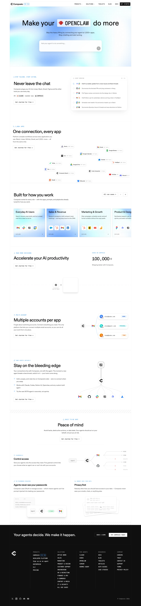

Composio 主题
Composio 的 Design.md 主题展示，围绕开发工具、媒体内容、暗色界面、专业工具组织页面。
Tool integration platform. Modern dark with colorful integration icons.
开发工具媒体内容暗色界面专业工具SaaS 产品浅色界面B2B 产品效率工具

来源
- 来源
- getdesign.md
- 镜像
- github:VoltAgent/awesome-design-md
- 网站
- https://composio.dev/
- 详情
- https://getdesign.md/composio/design-md
色板
#0f0f0f: #0f0f0f#181818: #181818#0007cd: #0007cd#0005a3: #0005a3#ffffff: #ffffff#1a26ff: #1a26ff#a8a8a8: #a8a8a8#888888: #888888#666666: #666666#222222: #222222#1a1a1a: #1a1a1a#333333: #333333
字体
display: abcDiatypebody: ui-sans-serifmono: JetBrains Monohints: abcDiatype,ui-sans-serif,JetBrains Mono,Fira Code,Inter
圆角
control: 8pxcard: 16pxpreview: 16pxpill: 9999pxsource: design-md
间距
xxs: 4pxxs: 8pxsm: 12pxbase: 16pxmd: 20pxlg: 24pxxl: 32pxxxl: 48pxsection: 96pxsource: design-md
使用建议
建议
- 建议：Reserve {colors.primary} for primary CTAs, wordmark, and spotlight glows。
- 建议：Use {rounded.md} (8px) for every CTA — not full pills。
- 建议：Use brightness-step ladder for elevation; avoid drop shadows。
- 建议：Pair every hero with a centered radial blue spotlight glow。
- 建议：Render code, CLI commands in JetBrains Mono via {typography.code}。
避免
- 避免：introduce a secondary brand color. Cyan and violet are illustrative-only。
- 避免：use full pills on CTAs。
- 避免：drop display weight to 400。
- 避免：add drop shadow tiers。
- 避免：use canvas-deep (#000000) outside terminal/code surfaces。
查看 DESIGN.md